About me
Working at the intersection of science, communication, and data
I’m currently a DPhil student studying computational biology at the University of Oxford through the ILESLA Doctoral Training Programme. I hold an MSc in Biochemistry from McGill University, where I investigated protein vulnerabilities in cancer through computational screening and experimental validation.
My professional experience spans pharmaceutical medical writing, laboratory science, and workflow automation. I have developed communications for healthcare professionals and patients, conducted lab work across R&D and clinical projects, and programmed tools for automation.
Outside of research and science communication, you can find me running, cycling, performing live theatre, or working on side projects like browser-playable games.
Selected work
Writing, research, and technical projects
Explore selected work across medical communications, computational biology, workflow automation, and creative programming.
Projects
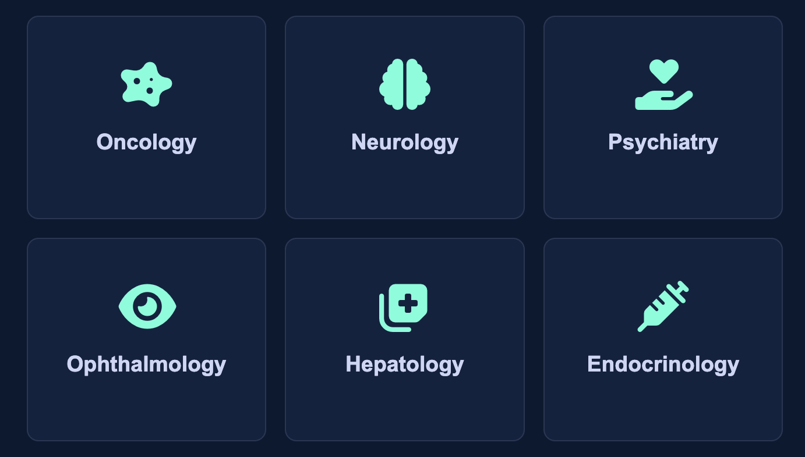
Writing Portfolio
Details about work examples, therapeutic areas, and deliverable formats
View portfolio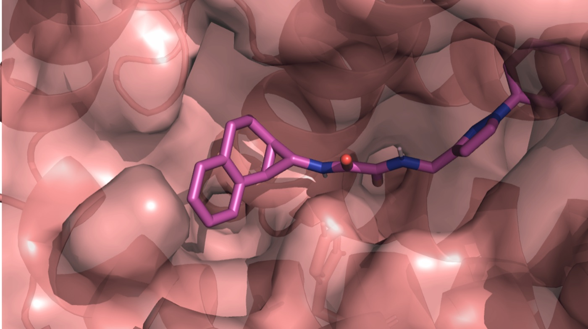
Virtual Screening
MSc thesis for virtual screening of ligands as potential therapeutics for targeted cancer treatment
View MSc thesis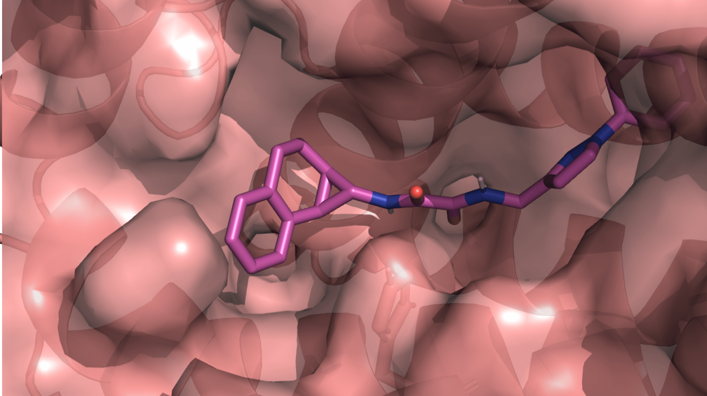
Andy's Arcade
Collection of 10 original, browser-playable games, each developed using Python
View arcadeAutomation tools
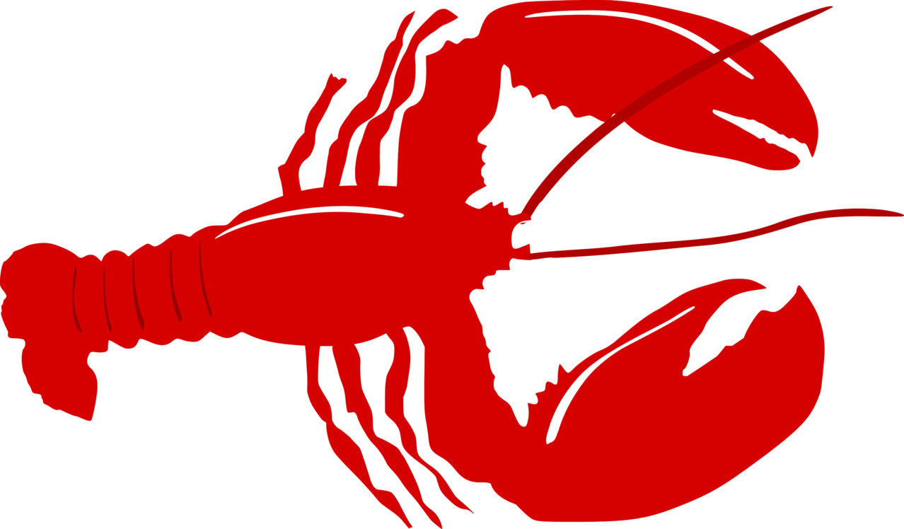
PDF Handler
Python GUI for automated PDF transcription, Word document formatting, and reference sourcing
View GitHub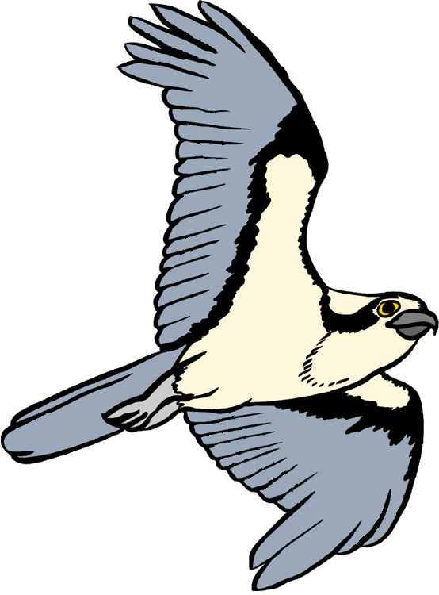
Reference Renumberer
Python GUI for reference mapping and automated Word document updates
View GitHubSMP Analysis Tool
Python-based GUI application for automating various plate data analysis tasks using SoftMax Pro
View GitHubBeyond the page and the lab
Science communication and creative work
I’m fascinated by computational drug discovery, bioinformatics, and science communication. I’m always exploring new ways to merge creativity with technology and to make technically complex ideas more engaging.
Outside of work, that same curiosity drives me to seek out new challenges. Whether through hosting on TEDx events, performing improv theatre, or exploring new roads by bike, I'm always up for a challenge.
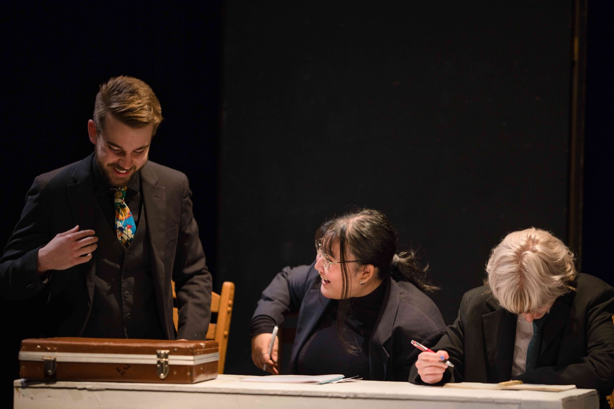
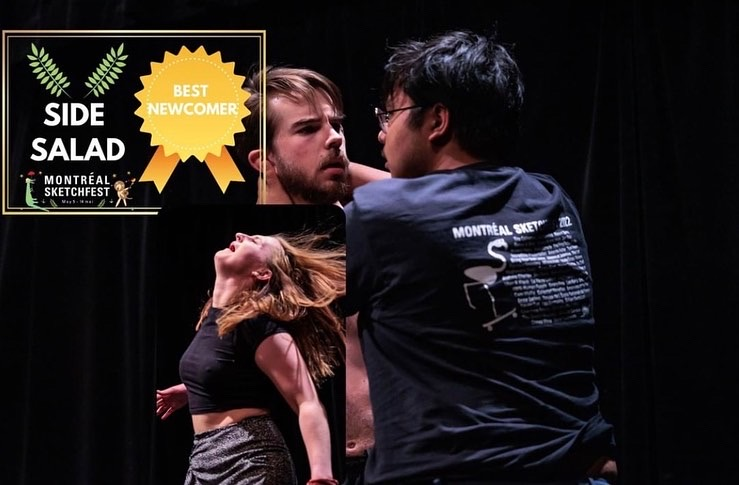
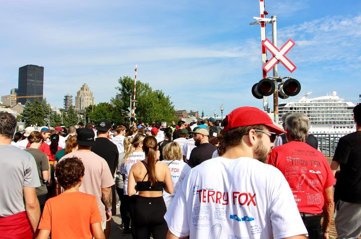
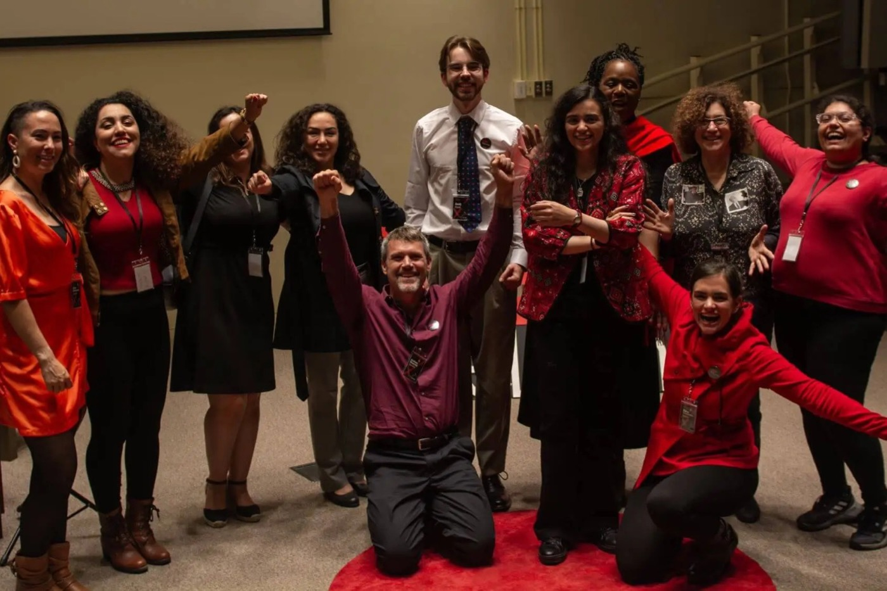
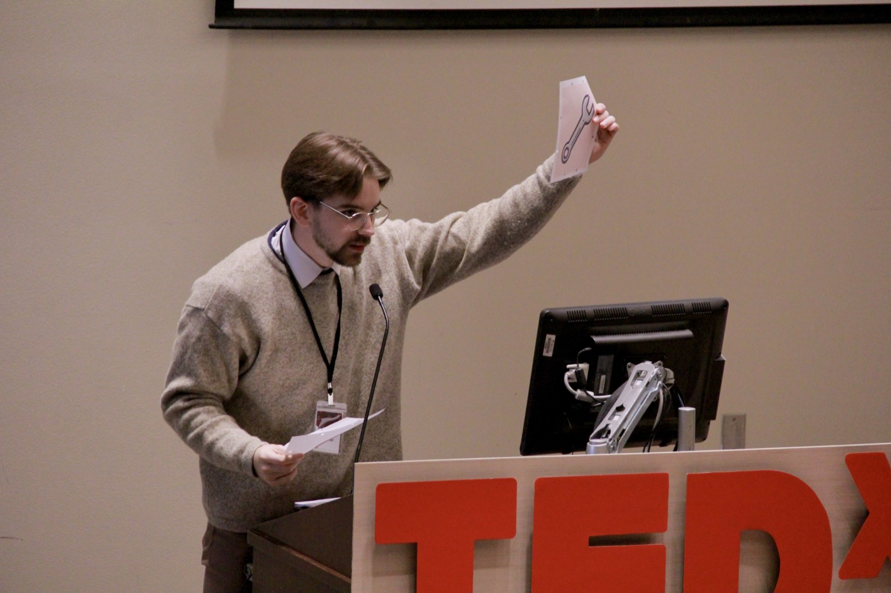
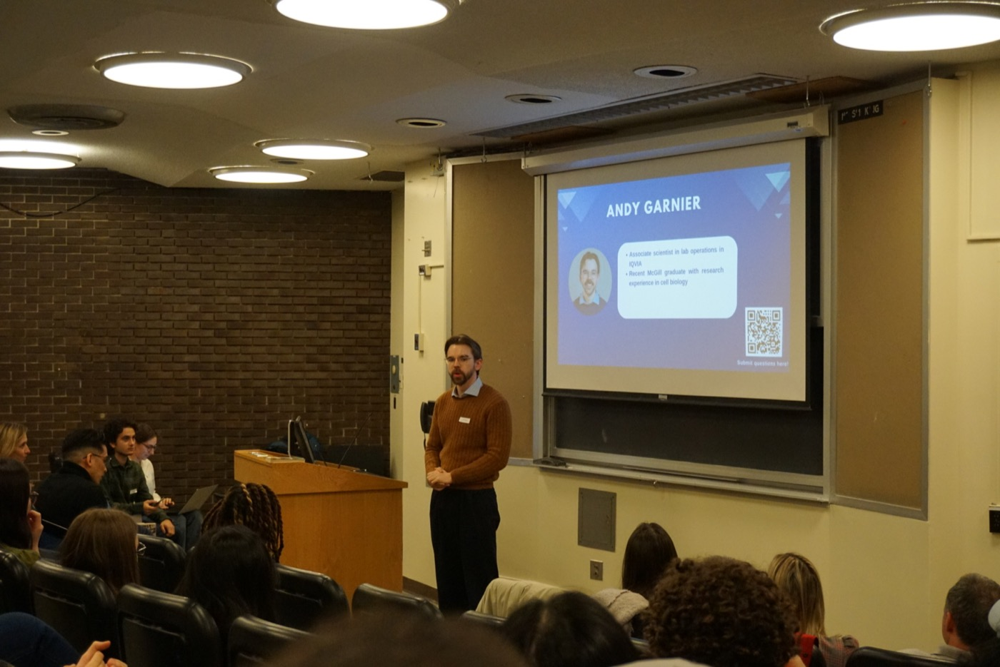
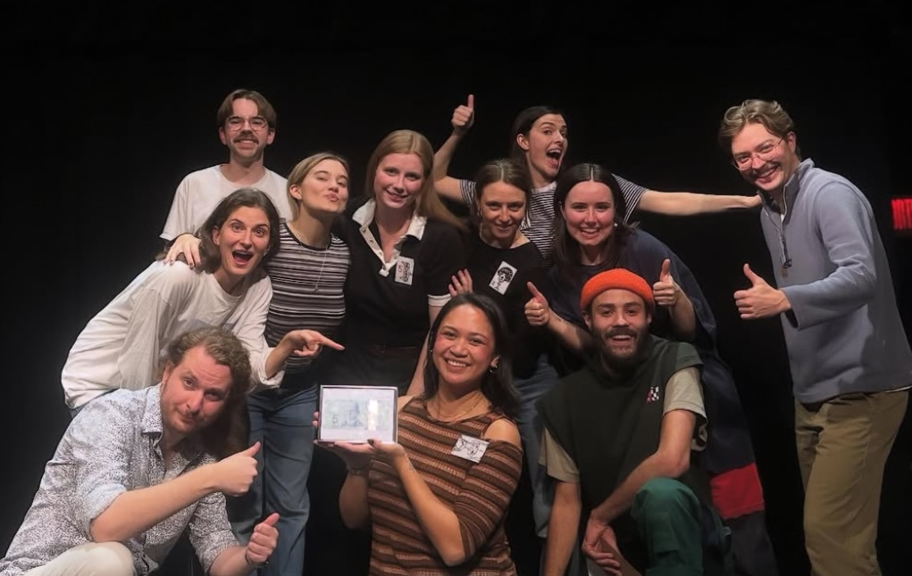
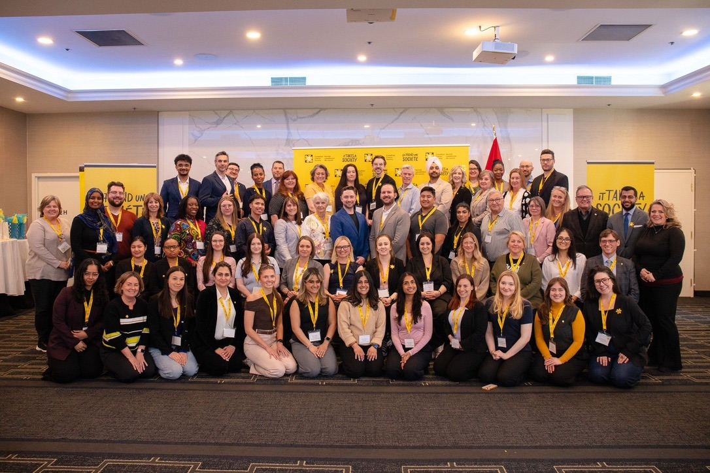
McGill Drama Festival Actor — 2022
Get in touch
Let’s connect
Interested in my work or want to start a conversation? Connect with me on LinkedIn and shoot me a message.